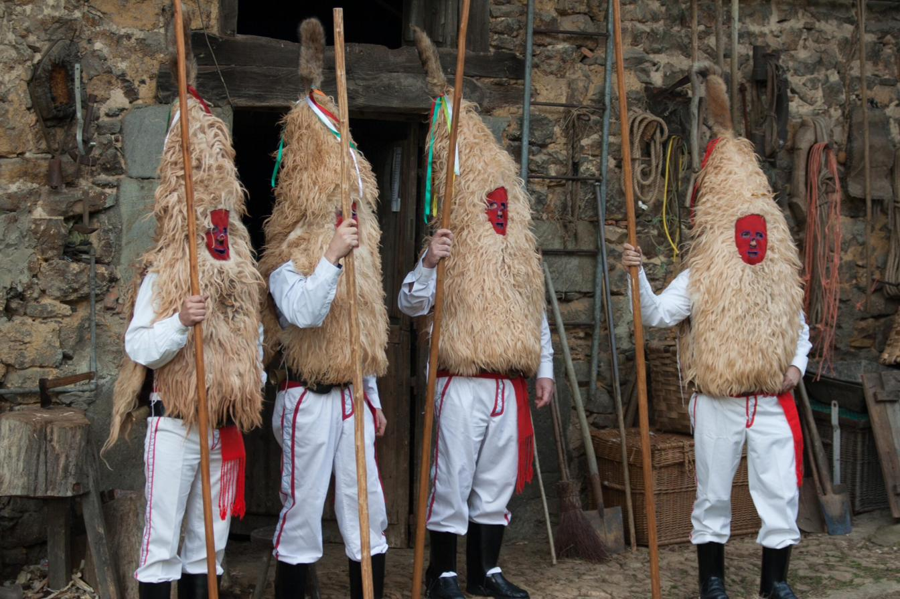

Los Sidros son una mascarada de invierno con raíces precristianas que se celebra cada enero en Valdesoto, en el concejo de Siero (Asturias).
Valdesoto, Siero (Asturias)
Segundo domingo de enero
Ritual precristiano de invierno
Conoce los rituales precristianos, su simbolismo y la recuperación de esta tradición tras el franquismo.
Ver historia
Descubre a Les Madamas, Les Guiletes, El Guirrio y al propio Sidro, figuras centrales de la mascarada.
Ver personajes«El sonido del cencerro es una llamada a la abundancia y al nuevo ciclo agrícola»